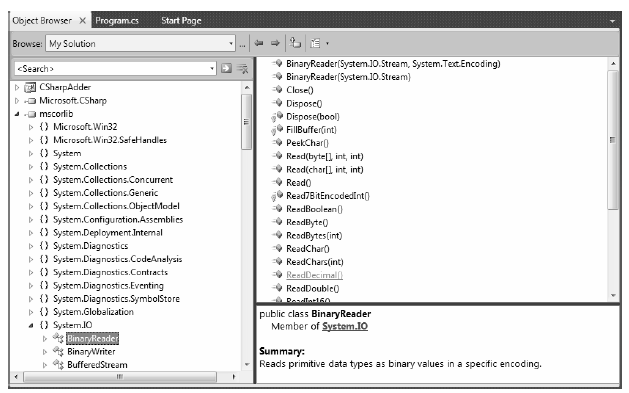

Each of us understands the importance of code libraries. The point of libraries such as MFC, Java Enterprise Edition, and ATL is to give developers a well-defined set of existing code to leverage in their applications. However, the C# language does not come with a language-specific code library. Rather, C# developers leverage the language-neutral .NET libraries. To keep all the types within the base class libraries well organized, the .NET platform makes extensive use of the namespace concept.
A namespace is a grouping of semantically related types contained in an assembly. For example, the System.IO namespace contains file I/O-related types, the System.Data namespace defines basic database types, and so on. It is very important to point out that a single assembly (such as mscorlib.dll) can contain any number of namespaces, each of which can contain any number of types.
To clarify, Figure 1-5 shows a screenshot of the Visual Studio 2010 Object Browser utility. This tool allows you to examine the assemblies referenced by your current project, the namespaces within a particular assembly, the types within a given namespace, and the members of a specific type. Note that the mscorlib.dll assembly contains many different namespaces (such as System.IO), each with its own semantically related types (e.g., BinaryReader).
Figure 1-5 A single assembly can have any number of namespaces
The key difference between this approach and a language-specific library such as MFC is that any language targeting the .NET runtime makes use of the same namespaces and same types. For example, the following three programs all illustrate the ubiquitous “Hello World” application, written in C#, VB, and C++/CLI:
// Hello world in C#
using System;
public class MyApp
{
static void Main()
{
Console.WriteLine("Hi from C#");
}
}
' Hello world in VB
Imports System
Public Module MyApp
Sub Main()
Console.WriteLine("Hi from VB")
End Sub
End Module
// Hello world in C++/CLI
#include "stdafx.h"
using namespace System;
int main(array<System::String ^> ^args)
{
Console::WriteLine(L"Hi from C++/CLI");
return 0;
}
Notice that each language is making use of the Console class defined in the System namespace. Beyond minor syntactic variations, these three applications look and feel very much alike, both physically and logically.
Clearly, your primary goal as a .NET developer is to get to know the wealth of types defined in the (numerous) .NET namespaces. The most fundamental namespace to get your hands around initially is named System. This namespace provides a core body of types that you will need to leverage time and again as a .NET developer. In fact, you cannot build any sort of functional C# application without at least making a reference to the System namespace, as the core data types (e.g., System.Int32, System.String) are defined here. Table 1-3 offers a rundown of some (but certainly not all) of the .NET namespaces grouped by related functionality.
Table 1-3. A Sampling of .NET Namespaces
| .NET Namespace | Meaning in Life |
|---|---|
| System | Within System, you find numerous useful types dealing with intrinsic data, mathematical computations, random number generation, environment variables, and garbage collection, as well as a number of commonly used exceptions and attributes. |
| System.Collections System.Collections.Generic | These namespaces define a number of stock container types, as well as base types and interfaces that allow you to build customized collections. |
| System.Data System.Data.Common System.Data.EntityClient System.Data.SqlClient | These namespaces are used for interacting with relational databases using ADO.NET. |
| System.IO System.IO.Compression System.IO.Ports | These namespaces define numerous types used to work with file I/O, compression of data, and port manipulation. |
| System.Reflection System.Reflection.Emit | These namespaces define types that support runtime type discovery as well as dynamic creation of types. |
| System.Runtime.InteropServices | This namespace provides facilities to allow .NET types to interact with unmanaged code (e.g., C-based DLLs and COM servers) and vice versa. |
| System.Drawing System.Windows.Forms | These namespaces define types used to build desktop applications using .NET’s original UI toolkit (Windows Forms). |
| System.Windows System.Windows.Controls System.Windows.Shapes | The System.Windows namespace is the root for several namespaces that represent the Windows Presentation Foundation (WPF) UI toolkit. |
| System.Linq System.Xml.Linq System.Data.DataSetExtensions | These namespaces define types used when programming against the LINQ API. |
| System.Web | This is one of many namespaces that allow you to build ASP.NET web applications. |
| System.ServiceModel | This is one of many namespaces used to build distributed applications using the Windows Communication Foundation API. |
| System.Workflow.Runtime System.Workflow.Activities | These are two of many namespaces that define types used to build “workflow-enabled” applications using the Windows Workflow Foundation API. |
| System.Threading System.Threading.Tasks | This namespace defines numerous types to build multithreaded applications which can distribute workloads across multiple CPUs. |
| System.Security | Security is an integrated aspect of the .NET universe. In the security-centric namespaces, you find numerous types dealing with permissions, cryptography, and so on. |
| System.Xml | The XML-centric namespaces contain numerous types used to interact with XML data. |
I’m sure you noticed while reading over the listings in Table 1-3, that System is the root namespace for a good number of nested namespaces (e.g., System.IO, System.Data). As it turns out, however, the .NET base class library defines a number of topmost root namespaces beyond System, the most useful of which is named Microsoft.
Any namespace nested within Microsoft (e.g., Microsoft.CSharp, Microsoft.ManagementConsole, Microsoft.Win32) contains types that are used to interact with services unique to the Windows operating system. Given this point, you should not assume that these types could be used successfully on other .NET-enabled operating systems such as Mac OS X. For the most part, this text will not dig into the details of the Microsoft rooted namespaces, so be sure to consult the .NET Framework 4.0 SDK documentation if you are so interested.
Note Chapter 2 will illustrate the use of the .NET Framework 4.0 SDK documentation, which provides details regarding every namespace, type, and member found within the base class libraries.
It is worth reiterating that a namespace is nothing more than a convenient way for us mere humans to logically understand and organize related types. Consider again the System namespace. From your perspective, you can assume that System.Console represents a class named Console that is contained within a namespace called System. However, in the eyes of the .NET runtime, this is not so. The runtime engine only sees a single entity named System.Console.
In C#, the using keyword simplifies the process of referencing types defined in a particular namespace. Here is how it works. Let’s say you are interested in building a graphical desktop application using the Windows Forms API. The main window renders a bar chart based on some information obtained from a back-end database and displays your company logo. While learning the types each namespace contains takes study and experimentation, here are some possible candidates to reference in your program.
// Here are all the namespaces used to build this application.
using System; // General base class library types.
using System.Drawing; // Graphical rendering types.
using System.Windows.Forms; // Windows Forms GUI widget types.
using System.Data; // General data-centric types.
using System.Data.SqlClient; // MS SQL Server data access types.
Once you have specified some number of namespaces (and set a reference to the assemblies that define them), you are free to create instances of the types they contain. For example, if you are interested in creating an instance of the Bitmap class (defined in the System.Drawing namespace), you can write
// Explicitly list the namespaces used by this file.
using System;
using System.Drawing;
class Program
{
public void DisplayLogo()
{
// Create a 20 * 20 pixel bitmap.
Bitmap companyLogo = new Bitmap(20, 20);
...
}
}
Because your code file is importing System.Drawing, the compiler is able to resolve the Bitmap class as a member of this namespace. If you did not specify the System.Drawing namespace, you would be issued a compiler error. However, you are free to declare variables using a fully qualified name as well.
// Not listing System.Drawing namespace!
using System;
class Program
{
public void DisplayLogo()
{
// Using fully qualified name.
System.Drawing.Bitmap companyLogo =
new System.Drawing.Bitmap(20, 20);
...
}
}
While defining a type using the fully qualified name provides greater readability, I think you’d agree that the C# using keyword reduces keystrokes. In this text, I will avoid the use of fully qualified names (unless there is a definite ambiguity to be resolved) and opt for the simplified approach of the C# using keyword.
However, always remember that the using keyword is simply a shorthand notation for specifying a type’s fully qualified name, and either approach results in the exact same underlying CIL (given the fact that CIL code always makes use of fully qualified names) and has no effect on performance or the size of the assembly.
In addition to specifying a namespace via the C# using keyword, you also need to tell the C# compiler the name of the assembly containing the actual CIL definition for the referenced type. As mentioned, many core .NET namespaces are defined within mscorlib.dll. However, the System.Drawing.Bitmap class is contained within a separate assembly named System.Drawing.dll. A vast majority of the .NET Framework assemblies are located under a specific directory termed the global assembly cache (GAC). On a Windows machine, this can be located by default under C:\Windows\Assembly, as shown in Figure 1-6.
Figure 1-6 Many .NET libraries reside in the GAC
Depending on the development tool you are using to build your .NET applications, you will have various ways to inform the compiler which assemblies you wish to include during the compilation cycle. You’ll examine how to do so in the next chapter, so I’ll hold off on the details for now.
Note With the release of .NET 4.0, Microsoft has opted to isolate .NET 4.0 assemblies in a unique location, which is independent from C:\Windows\Assembly. Chapter 14 will address this point in detail.